.NET 10 · WINDOWS 10/11
HASS.Agent .NET10
A modern, lightweight Windows companion for Home Assistant — notifications, media control, sensors, commands, and one-click updates.

A modern, lightweight Windows companion for Home Assistant — notifications, media control, sensors, commands, and one-click updates.
Observe and control your Windows PCs from Home Assistant — split between an interactive tray app and an optional system service.
Home Assistant notifications as Windows notifications or in an always-visible window of its own — with pictures, buttons and text replies that come back to HA for automations.
Control and observe the active media session — play, pause, skip, volume, and album art straight from HA.
Built-in system sensors plus your own — a process, a service, a drive, the output of a command or script — with fast / normal / hourly / startup polling profiles. In the beta: CPU and GPU temperatures read from a running LibreHardwareMonitor.
Lock, sleep, shutdown, restart — and your own buttons: programs, PowerShell scripts, key presses, links. Run them from automations or the HA dashboard.
Your Home Assistant dashboard in a small window above the tray, one click away — or any page in a window of its own, like the camera when the doorbell rings.
The screen as a light in Home Assistant — brightness, off, on. Pick the default speaker or microphone, and set the volume of a single app.
Give a key combination a name and it becomes an event in Home Assistant — start any automation straight from the keyboard.
An optional system service handles features that should work even when no user is logged in.
Opt-in toolbox: MQTT cleanup, live monitor, debug log, settings backup/restore, and factory reset.
BETA is in 10.9.0-beta.2. For the app, tick Beta updates on the Danger Zone page. For the integration, choose Redownload in HACS, turn on Show beta versions and pick 10.9.0-beta.2.
Use whichever fits your setup — or let the app fail over automatically when you're away from home.
Fast, local auto-discovery via your MQTT broker (e.g. Mosquitto). The primary, full-featured transport.
Connect over the Home Assistant WebSocket API — perfect for laptops away from home or setups with no MQTT broker. Auto-fails over when MQTT drops.
A notification-only local endpoint for simple, direct integrations.
Every PC becomes a device of the integration, with its media player, sensors and command buttons — created from what the app advertises, and gone again when you switch something off.
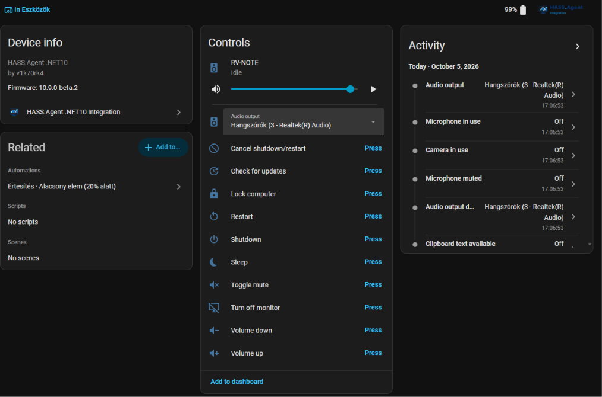
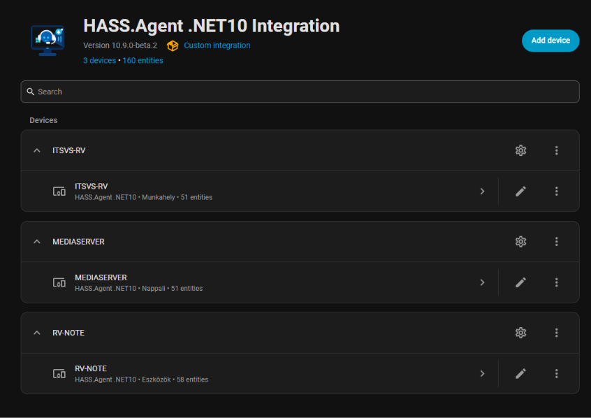
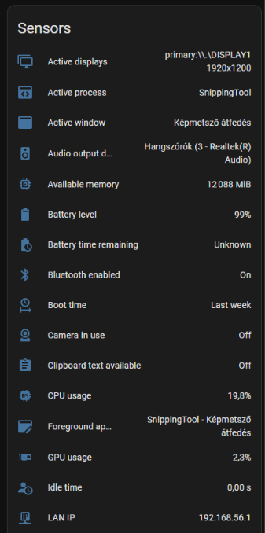
The HA update entity has a real Install button. With the system service installed, updates apply fully silently — no UAC prompt, the tray app relaunches itself, and Home Assistant gets a persistent notification when it's finished. Opt into the beta channel right inside the app to follow pre-releases.


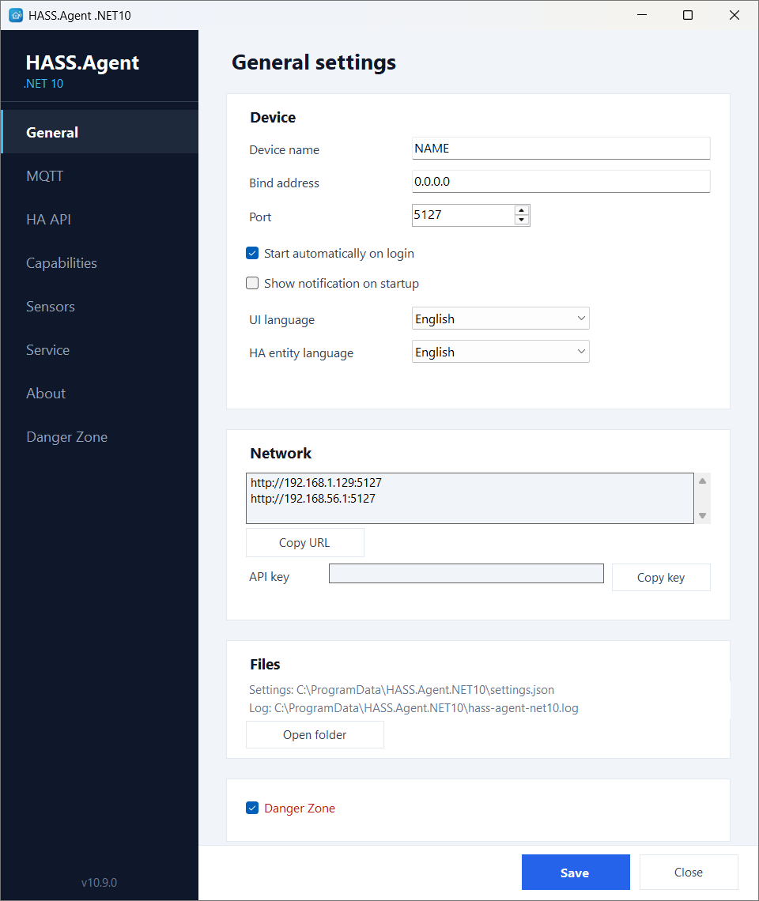
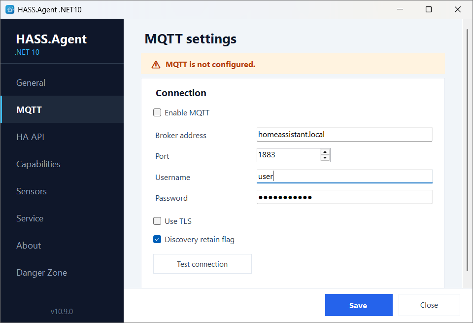
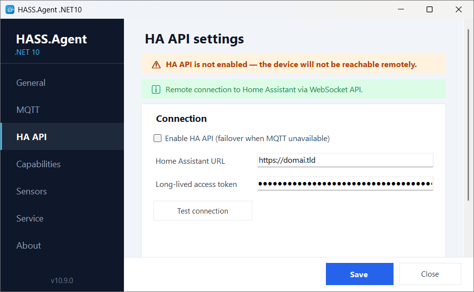
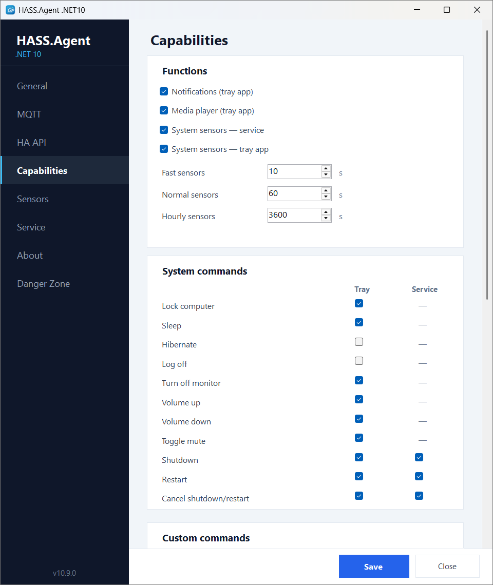
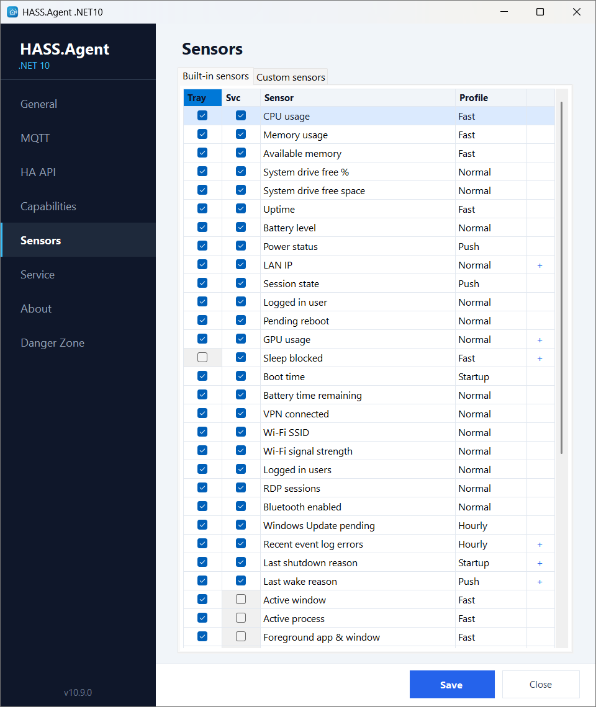
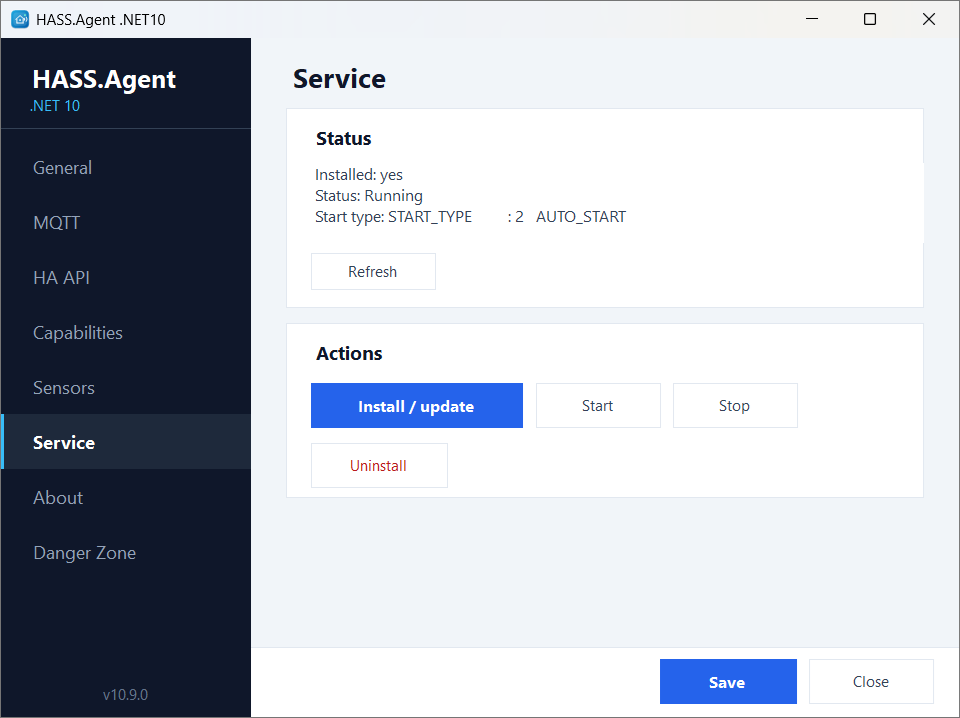
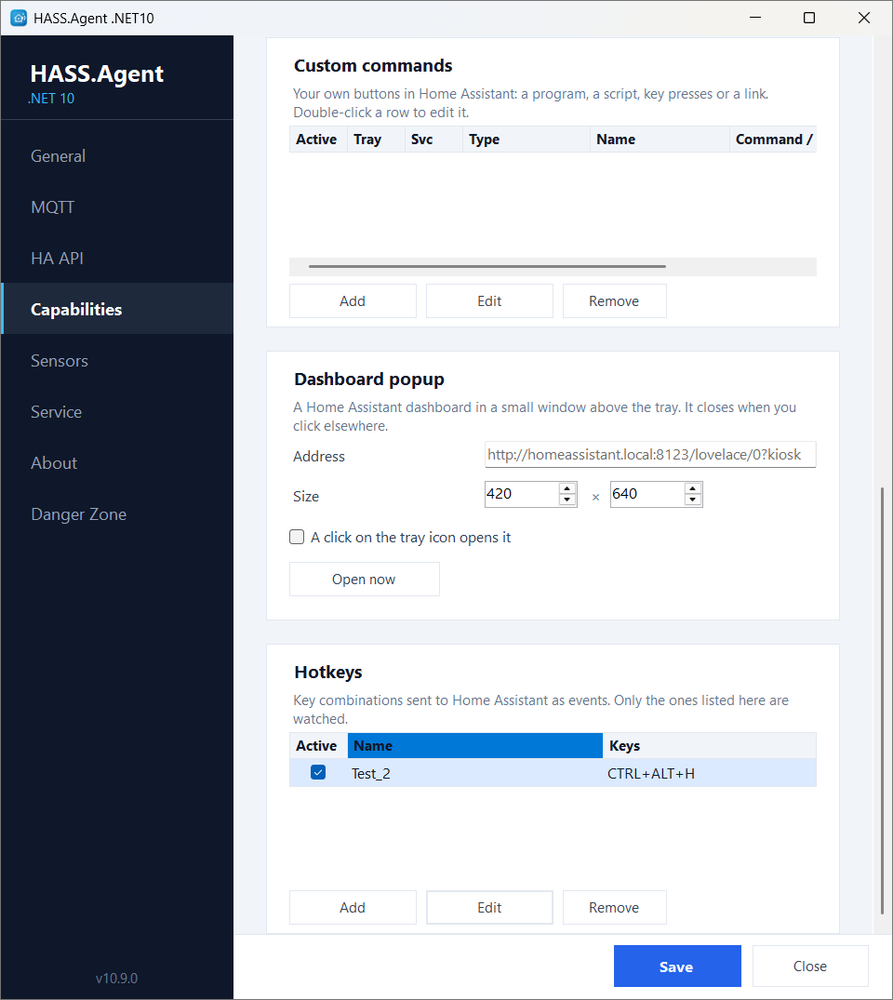
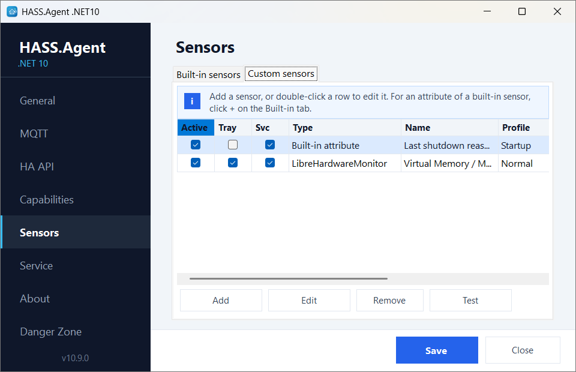
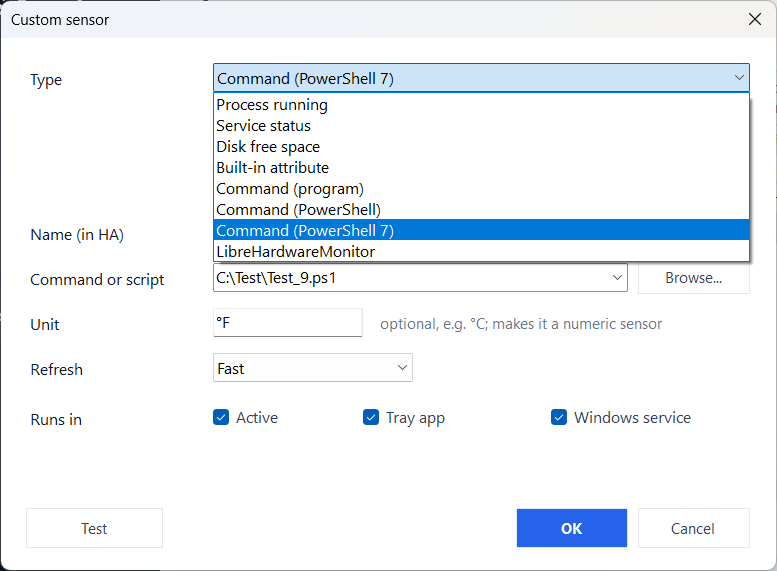
An opt-in toolbox for maintenance and diagnostics — enable it with a checkbox on the General page.
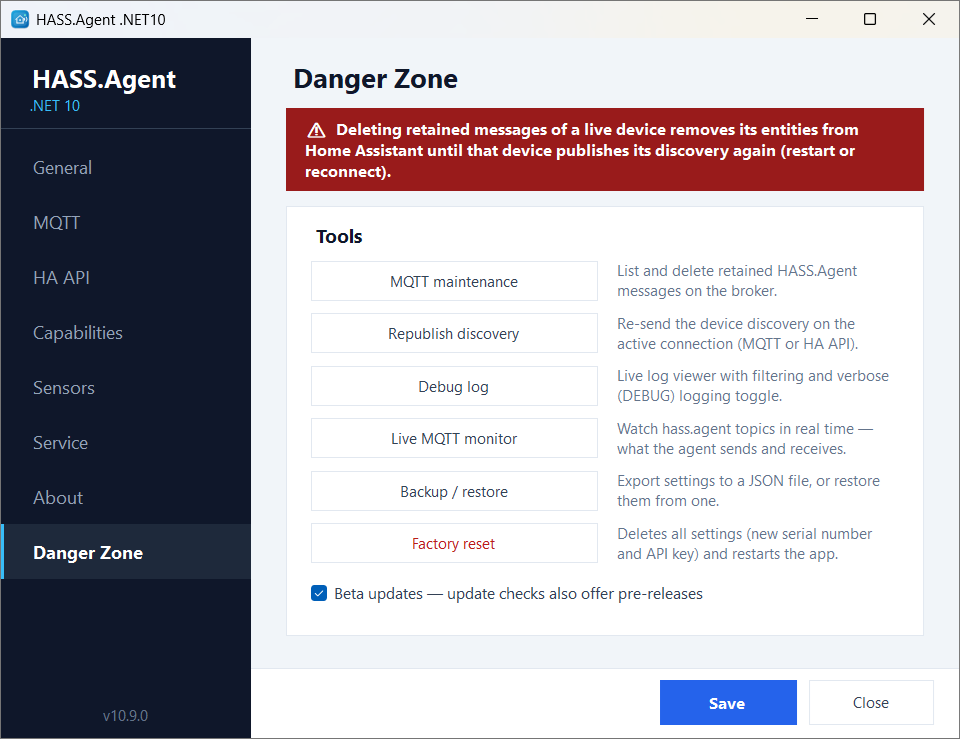


Two pieces: the Windows app and the Home Assistant integration.
Search for HASS.Agent in HACS — it is in the default store, no custom repository needed. Open it in HACS or see the repository.
Enable MQTT or the HA API in settings — the device appears in Home Assistant automatically.
Everything in detail, from the first notification to your own sensors.
Notifications with pictures and replies, the media player, the dashboard popup, display and audio, hotkeys, the Windows service, updates.
The built-in Windows sensors with their attributes and polling profiles, and how to add your own.
System commands and custom commands: programs, PowerShell, key presses, links, popup windows.
MQTT, the Home Assistant WebSocket API and the local HTTP API, with the topics and events they use.
What is the same as in the classic client, what is different, and how to switch.
Every release and what changed in it.
A free, open-source Windows app that connects a PC to Home Assistant. Home Assistant can show notifications on the PC, control its media playback and volume, read its sensors (CPU, memory, battery, active window and many more), and run commands on it such as lock, sleep, shutdown or your own scripts.
No. It began as a fork of HASS.Agent and has grown into a project of its own, built on .NET 10 with its own Home Assistant integration. The two do not share settings or entities. Coming from HASS.Agent explains what is the same, what is different and how to switch.
No. The app connects over MQTT, over the Home Assistant WebSocket API, or both with automatic failover. The WebSocket API needs no broker and also works remotely, for example through Nabu Casa.
Windows 11 and Windows 10 version 2004 or newer, on x64. The .NET runtime is included, there is nothing else to install.
Install the HASS.Agent integration from the HACS default store in Home Assistant, then run the signed installer from the releases page on the PC and enable MQTT or the HA API in the settings. The PC then turns up in Home Assistant on its own.
Yes. It is MIT-licensed, with no telemetry: the app only talks to your own Home Assistant or MQTT broker, and to GitHub to check for updates.